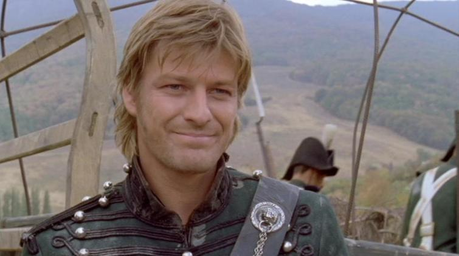
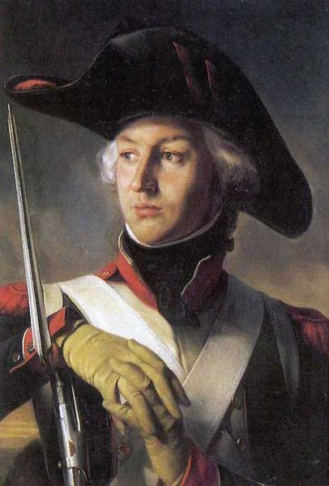

어느 영국군 장교의 이베리아 전쟁 회고록
게시: 2019-02-14T06:30:00+09:00
이번 포스팅은 J. Kincaid 라는 이름의 스코틀랜드 출신의 젊은 장교가 쓴 "Adventures in the Rifle Brigade, in the Peninsula, France, and the Netherlands from 1809 to 1815" 라는 책의 일부 중 인상 깊은 장면 몇가지를 발췌해서 적은 것입니다. 5년 전에 적었던 포스팅인데, 목요일이라 재탕으로 올립니다. 이제 다음주에 마무리할 '나폴레옹 시대의 병참부'와도 연계되는 내용입니다.

(참고로, 이 킨케이드 대위가 복무한 부대인 제95 라이플 연대는 Bernard Cornwell의 소설 속에서 리처드 샤프가 소위로 부임한 그 라이플 연대가 맞습니다.)
Episode 1. 영국 장교들의 야전 살림살이
이런 경우 우리 수송대는 언제나 아직 후방에 있었으므로, 각 중대의 장교들은 포르투갈 사내아이 하나를 고용하여 당나귀 한마리를 끌고 약간의 거리를 두고 중대를 따라오도록 했다. 이 당나귀에는 장교들의 야전 생활에 필요한 보잘 것 없는 사치품들이 실려 있었다. 그 짐꾸러미에는 큰 보트용 망토와 담요, 돼지가죽으로 만든 작은 포도주 부대 하나, 럼이나 브랜디 같은 증류주를 담은 수통 하나, 찻잎과 설탕 조금이 실려 있었고, 거기에 당나귀에 묶여 있는 염소 한마리가 있었다. (염소는 아마 젖을 짜기 위함인듯 ?) 그리고 포르투갈 사내아이의 주머니에는 2~3 달러가 들어있었는데, 이는 그 날 행군을 하다가 운이 좋으면 생기는 기회에 따라 빵이나 버터 같은 사치품을 사라고 넣어준 것이었다. 우리는 그 아이가 구해오는 그런 보급품의 출처를 캐묻는 것에 대해서는 별로 깐깐하게 굴지 않았다. 그래서 그 아이는 빈손으로 나타나지만 않으면 우리들의 역정에 시달릴 걱정을 할 필요가 없었다.
이런 아이들은 무척이나 신의가 있고 똑똑하여, 무척 어려운 환경 속에서도 매일 저녁 어떻게든 우리 중대의 위치를 찾아 오곤 했다. 딱 한번, 마세나(Massena) 원수가 후퇴할 때 우리 중대의 아이가 우리를 찾아오지 못한 밤이 딱 한번 있었다. 이 아이는 그날 밤 내내 영국군의 넓은 야영 캠프 내에 복잡하게 산재된 모닥불들의 미로 속을 헤매고 다니다 결국 포기하고 용기병 부대 옆에서 당나귀와 함께 잠을 잤는데, 일어나보니 우리 중대는 그 용기병 부대에서 20야드 (약 18m) 떨어진 곳에 있었다고 한다.
Episode 2. 빵이 없어서 고기를 먹다
5월 20일, 빵 또는 그 비슷한 아무 것도 없이 지낸지 3일 째다. 빵 없이 고기만 며칠 먹다보면 고기가 정말 구역질 날 정도가 된다.
오늘 새벽에는 평소처럼 매우 이른 새벽에 행군을 시작하지는 않을 것이라는 이야기를 듣고, 난 해가 뜨기 전에 시에라 데스트렐라(Sierra D'Estrella) 앞에 있는 약 2마일 (약 3.2km) 떨어진 한 마을로 출발했다. 그 마을은 프랑스군의 동선 바깥 쪽에 있었으므로, 뭔가 돈을 주고 살 수 있는 것이 있지 않을까 싶어서였다.
도착해보니, 인근 수녀원에서 도망쳐 나온 수녀들이 마을 공동 화덕 건물 바깥 쪽에서 기다리고 있는 것을 볼 수 있었다. 이들은 옥수수 가루(Indian cornmeal)로 만든 빵 반죽을 들고 와 여기서 굽고 있었던 것이었다. 내가 그 빵을 좀 달라고 간절히 부탁하자, 그들 중 두명이 친절하게도 자신들의 몫을 내게 내주었다.
난 그녀들에게 키스와 함께 1달러(dollar는 당시 스페인 화폐 단위입니다 미국 달러도 원래 여기서 나온 말입니다)를 보답으로 주었다. 그녀들은 나의 키스를 '무척 특별한 호의'로 받아들였고, 내가 내민 1달러 은화에 대해서는, 그것을 물끄러미 보더니, 이런 말을 하면서 받아 들었다.
"우리 의지가 아니라, 우리의 가난이 거절하기 어렵게 만드네요."
난 이 설구워진 빵덩어리를 들고 이제 막 무장을 하고 있던 동료 장교들에게 달려갔다.
Episode 3. 묘한 분위기의 비공식 휴전선
(포르투갈에서 후퇴하는 프랑스군을 추격하던 영국군은 협곡을 사이에 두고 프랑스군과 대치하다가, 겨울이 되자 비공식적이고 자연발생적인 묘한 휴전에 들어갑니다.)
협곡에 걸린 다리에서, 우리 부대의 보초 자리는 겨울 동안 매우 다양한 사람들에게 정식 응접실 역할을 했다.
나는 우리 영국 해군 장교들이 마치 6파운드 포처럼 커다란 망원경을 안장 뒤에 매단 노새를 타고 리스본에서 가끔씩 오는 것을 무척 즐겁게 보곤 했다. 이들은 매번 올 때마다 어김없이 처음으로 묻는 것이 바로 코 앞에 있는 프랑스군 보초병을 가리키며 "저기 있는 저 친구는 누구요?" 하고 묻고는, 우리가 프랑스군이라고 대답하면 항상 화들짝 놀라서 "그럼 대체 왜 저 친구를 안 쏩니까 ?"라고 물었기 때문이었다.
이 비공식적인 적대 행위 중단 기간 동안 프랑스군과 우리 사이에는 예의와 호의가 넘치는 행동들이 여러번 반복되었다. 한번은 우리측 어느 장교의 그레이하운드 사냥개들이 토끼를 쫓다가 프랑스군 진영으로 넘어갔는데, 프랑스군은 깍듯한 예의를 갖추어 그들을 돌려 보내기도 했다.
어느날 밤, 다리 끝에 있는 보초 초소 현장에 내가 있을 때였는데, 프랑스군 보초 쪽에서 머스켓 총탄 하나가 날아와 우리 보초들과 내가 둘러싸고 앉아있던 모닥불의 불붙은 장작에 박히는 사건이 있었다. 다음날 아침, 프랑스군에서는 백기를 든 사절을 보내어 간밤의 사고에 대해 '멍청이 같은 보초가 영국군이 자기 쪽으로 몰려 오고 있다고 착각하고는 총질을 했다' 라며 사과를 해왔다. 우리는 그 총격이 멍청함보다는 악의 때문에 저질러졌다는 것을 잘 알고 있었지만, 어쨌거나 그 사과를 받아들였다.
한번은 쥐노(Junot, 폭풍우라고 불렸던 아브란테스 공작 본인 맞습니다) 장군이 정찰을 하다 우리 보초가 쏜 총에 심한 부상을 입었다. 그때 프랑스군이 보급 물자 측면에서 무척 곤궁한 상황이라는 것을 알고 있던 웰링턴 경은 쥐노 장군에게 사절을 보내 '혹시 필요하신 것이 있다면 어떤 것이라도 리스본에서라도 구해드리겠다'라고 제안했다. 그러나 쥐노 장군은 너무 정치적인 인물이라, '사실 보급품이 부족한 편'이라는 것을 인정하지 않고 사양했다.

(역주 : 실제로 쥐노 장군은 1811년 1월 코에 총탄을 맞고 큰 부상을 당했습니다. 그러나 어지간한 역사 자료에는 어떤 전투에서 그렇게 최고 사령관이 총을 맞을 정도로 악전고투를 벌였는지 나와 있지 않아서 의아해했는데, 그 사정이 이런 것이었군요 !)
Episode 4. 피폐한 포르투갈 상황
이 인근은 하도 오랜 기간 전쟁에 시달렸고, 또 영국군과 프랑스군 양쪽에게 번갈아가며 강제로 보급품을 공급해야 했기 때문에, 주민들은 자신들이 굶어죽게 될까 염려하여 결국 남아 있는 식량을 모두 감추어 버렸다. 그래서 그들은 영국군이 프랑스군과 싸워주는 것에 대해서 입으로는 칭송과 감사를 늘어놓았지만, 식량은 빵 한덩어리도 내놓지를 않았다.
결국 우리는 인근 수 마일에 걸쳐, 대로변은 물론 골목길이며 숲길이며 요소요소마다 정찰병들을 매복시켰다가 이웃 마을로 가는 농민들을 잡아세워 놓고 검문검색을 해야 했다. 이렇게 찾은 식량은 병참부 명령서 한장을 주고는 빼앗았는데, 우리는 당시 할머니가 들고 가는 바구니에 든 감자 몇 알조차 빼앗을 정도로 궁한 상황이었다.
Episode 5. 민간인에 대한 잔악 행위
우리는 피르네스(Pyrnes) 인근에서 그날 밤을 보냈다. 이 작은 마을과, 프랑스 장군들의 믿지 못할 약속에 속아 피난을 떠나지 않았던 그 몇 안되는 주민들의 비참함은 이 야만적이고 자비심 없는 적군이 최근에 다녀간 흔적을 그대로 보여주고 있었다.
젊은 여자들은 집 안에서 잔혹하게 성폭행을 당한 채 누워 있었고, 거리에는 부서진 가구들 사이사이에는 살해된 농민들과 노새, 나귀들의 썩어가는 시체가, 역겨운 악취를 풍기는 온갖 종류의 오물과 함께 거리에 널려 있었다. 살아남은 몇 안되는 남자 주민들은 그들의 친지 및 재산의 잔해 속을 멍하니 돌아다녔는데, 마치 복수를 하기 위해 무덤 밖으로 걸어나온 시체들처럼 보였다. 간혹 낙오된 불행한, 혹은 부주의한 프랑스군의 시신도 발견되었는데, 그들의 시신은 하나같이 잔혹하게 난자되어 있어, 그 복수가 얼마나 정성껏 실행되었는지를 보여 주었다.